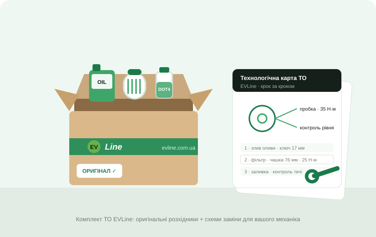

Механик не знает авто
Без документации даже замена фильтра — эксперимент.
Комплекты ТО из Китая
Оригинальные расходники, жидкости и фильтры из Китая под вашу модель, пробег и VIN.

Без документации даже замена фильтра — эксперимент.
Дилерские мануалы закрыты, СТО работают «на ощупь».
Для электро критичны оригинальные жидкости. Аналог «вроде подходит» здесь не работает.
В Украине расходники стоят в разы дороже, чем в Китае.
Состав зависит от модели и пробега. Пришлите VIN — скажем точный перечень и две цены: срочно авиа или заблаговременно морем.

Масло и масляный фильтр (для DM-i гибридов), воздушный и салонный фильтры, мелочи по регламенту. Для электро — фильтры и проверочные позиции.

Полный круг обслуживания: плюс тормозная жидкость, оригинальная (диэлектрическая) охлаждающая жидкость, масло редуктора с фильтром, колодки по состоянию.

Для гибридов с пробегом: плюс комплект привода ГРМ (где предусмотрено регламентом), свечи, помпа, полная замена всех жидкостей.
Цены ориентировочные — точный состав и стоимость подтверждает менеджер после проверки VIN.
Восемь неочевидных вещей на пробеге до 100 тыс. км. Нажмите на карточку — и решайте сами, доверять ли «обычному» ТО.
Охлаждающая жидкость батареи должна быть диэлектриком. Со временем она становится проводящей и кислой — это меряется прибором, а не «на глаз». Если пропустить: коррозия контура, ошибки изоляции, перегрев и ускоренная деградация батареи.
На авто с электронным ручником перед заменой колодок нужен сервисный режим EPB через диагностику. Если механик просто вдавит поршень — сломает электропривод суппорта. Так «экономная» замена колодок заканчивается покупкой суппорта.
В DM-i бензин попадает в масло из-за коротких циклов работы ДВС — масло разжижается топливом. Поэтому его меняют по времени, а не по пробегу. Если пропустить: задиры и износ двигателя, который «почти не работал».
У гибридов контур ДВС и контур батареи с электроникой — это разные жидкости с разными требованиями: обычный антифриз и диэлектрик. Если пропустить: СТО дольет «универсальный» в оба — коррозия, проводимость и дорогой ремонт двух контуров сразу.
Из-за рекуперации тормоза «спят»: жидкость годами впитывает влагу, направляющие закисают. Если пропустить: клин суппорта и «ватный» тормоз в худший момент. Влажность жидкости меряется тестером за минуту.
Электрокомпрессор требует диэлектрического масла. Обычное СТО зальет универсальное — проводящее. Если пропустить: компрессор под замену, а там, где кондиционер охлаждает батарею — еще и перегрев батареи летом.
12V аккумулятор питает всю электронику и умирает внезапно. А сопротивление изоляции ВВ-системы вообще проверяется только дилерским оборудованием. Если пропустить: авто-«кирпич» и скрытые утечки тока, которых никто не видит.
Масло редуктора работает под ударным моментом электромотора с первого метра. Замена по регламенту — недорогая. Если пропустить: гул и ремонт редуктора, который стоит как десять ТО.
Все эти проверки и предостережения уже прописаны в наших технологических картах — ваше СТО просто делает по списку.

К каждому комплекту ТО прикладываем технологические карты на замену каждой жидкости и сменного элемента: порядок работ, инструмент, моменты затяжки, партномера. Ваш механик просто делает по списку.
Это работает не только с ТО: заказываете у нас запчасти после ДТП — получаете схемы замены для вашего кузовного сервиса.
Это не скан дилерского мануала, а наша рабочая карта под конкретную модель и конкретную процедуру — на языке механика.

Образец страницы. Каждая карта печатается с водяным знаком номера заказа.
Технологические карты EVLine предназначены для квалифицированных механиков и не заменяют требований безопасности производителя.
ТО — единственная предсказуемая покупка для авто: вы заранее знаете пробег и дату. Этим стоит пользоваться.
Авиа — от $15,5/кг, море — от $5,6/кг. На комплекте весом 8–10 кг разница в разы. Заказали за 2 месяца — едет морем, вы экономите.
Покупаете напрямую из Китая через нас — без цепочки посредников, которые накручивают на «дефицитности».
Оригинальные жидкости и фильтры от дилера BYD/Zeekr/Li Auto. Для электро это вопрос не комфорта, а безопасности батареи и гарантии узлов.
И пробег. Менеджер определяет, какое ТО по регламенту и что входит.
Срочно авиа (от 14 дней) или заранее морем (от 60 дней) — с конкретной разницей в деньгах.
Оригинальные позиции с проверкой в Китае. Технологическая карта — под вашу модель и вашу процедуру.
Отдаете механику комплект и карту. Дальше мы напомним, когда будет приближаться следующее ТО.
Для работ уровня ТО — да: карта описывает процедуру до уровня «какой ключ и с каким моментом». В этом ее смысл: компетентным становится любой аккуратный механик.
В карты ТО высоковольтные процедуры не входят принципиально — это зона сертифицированных электриков. Все, что в комплекте, безопасно для обычного СТО.
Нет, карта идет только вместе с комплектом — это часть нашей услуги, а не отдельный товар. Каждый экземпляр маркируется номером заказа.
Зависит от веса. Ориентир: доставка 10-килограммового комплекта авиа — около $155, морем — от $56, а от 30 кг тарифы еще ниже. Плюс сами расходники дешевле, чем у локальных продавцов.
Покупаем у официальных дилеров в Китае, проверяем и фотографируем каждую позицию перед отправкой — фотоотчет вы получаете до того, как комплект поедет.